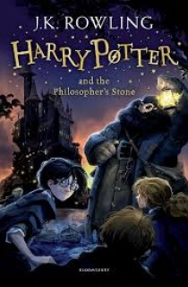

Bộ truyện bảy tập Harry Potter là tác phẩm đáng tự hào nhất, nổi tiếng nhất đồng thời cũng là tác phẩm mang lại danh tiếng cho sự nghiệp văn chương của nữ tác giả người Anh J. K. Rowling. Nội dung câu chuyện giả tưởng từng gây sốt trên nhiều thị trường sách này kể về cuộc chiến của cậu bé Harry Potter một mình chống lại một phù thủy hắc ám Chúa tể Voldemort, người đã giết cha mẹ cậu để thực hiện tham vọng làm chủ thế giới phù thủy. Harry Potter đã chắp cánh cho trí tưởng tượng của trẻ em trên toàn thế giới bay cao bay xa trong thế giới pháp thuật huyền hoặc. Truyện bắt đầu với một nhân vật bình thường, thậm chí là có phần tầm thường và nó diễn ra ngay bên cạnh chúng ta, bắt đầu từ sân ga 9¾ ở nhà ga Ngã tư Vua. Lần lượt bảy tập truyện sẽ đưa độc giả đi khám phá con đường trở thành pháp sư đầy chông gai, thử thách của Harry cùng với các bạn của mình tại ngôi trường phù thủy Hogwarts.

Tác giả:
Mục sách:
Tình Trạng:
Từ Khóa:
J.R.Rowling
Văn học nước ngoài
Hoàn (full)
covid